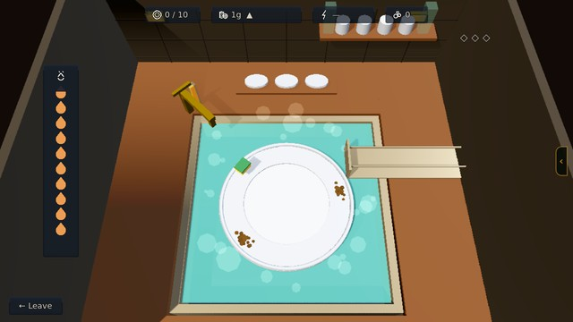
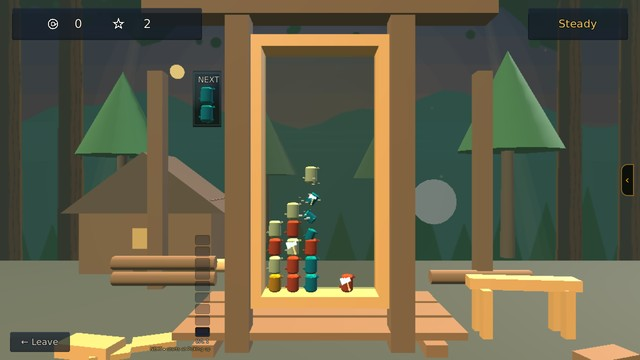
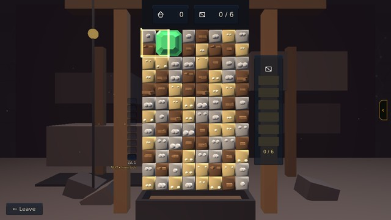
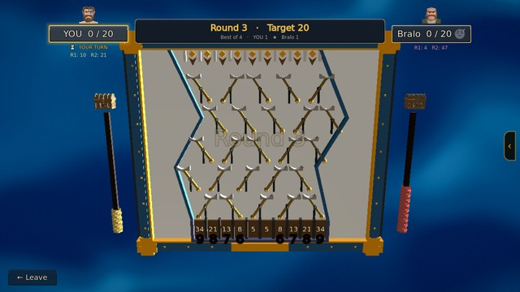
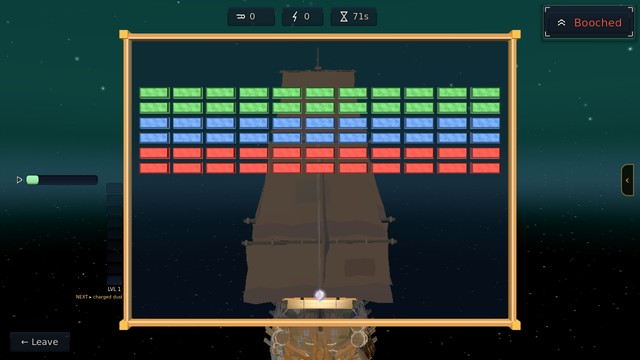
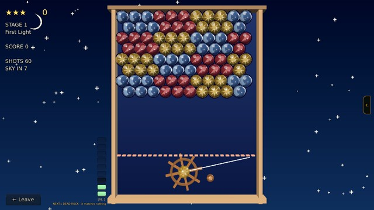
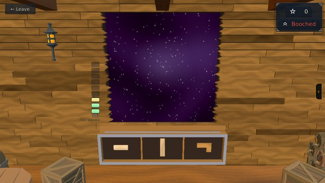
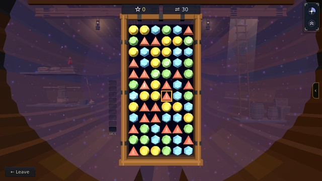

Dish Duty
The tavern's kitchen sink. Pays gold per plate. Ungated: no tools, no fee, and the one job a broke player can always reach.

- The sponge circles the plate — CLICK / SPACE the instant it crosses a caked-on MUCK spot
- Grime is crusted on in LAYERS — it takes several clean scrubs to wear a spot down
- Every good scrub flips the sponge's direction — stay sharp
- Nail scrubs back-to-back to build your FLOW: faster sweeps, tighter timing, MORE suds
- A good scrub SHOVES the lump a little way along the rim — herd it where you want it
- A mistimed scrub SLIPS: your flow breaks, grime smears back where you slipped, and THIS plate CHIPS
- 3 chips on one plate and it SHATTERS — no pay, and a strike. 3 strikes and you're out for the night
- A plate that makes it to the rack leaves its chips behind — only a SHATTERED plate costs you
- The HOT WATER drains as you work — let it run cold and the shift ends there
- Scrub a KETTLE off a plate's rim and it tops the water back up — worth going out of your way for
- Pay CLIMBS the longer you stay: 1g for your first plates, 6g once you're rolling
- Finish the whole rack for +10g. Wash 6 or more in ONE sitting without smashing a single plate for +15g on top of that
- Faster? hold RIGHT-CLICK / SHIFT. One load a day — and leaving early restarts the pay ladder
Lumberjacking
The Grove work-site. Pays wood, sold at the Market.

- ← → move the falling pair · ↑ rotate ccw · ↓ rotate the other way · ↓ or SPACE drop faster (hold)
- Pack a 2×2 or bigger SQUARE of one wood — that square is a SLAB, and slabs are the only thing that pays wood
- A long line of matching wood pays NOTHING — build squares, not rows
- Land a matching AXE against a group and the whole group SHATTERS, paying out every slab in it
- Chain shatters back-to-back for combo score
- A KNOT won't clear while it's a knot — but it ROTS: three drops after it lands it turns into a plain
log, and the colour showing through as it fades is the wood you'll get. Sometimes it's an axe
- Let the pile reach the top and the shift's over
Mining
The mine work-site. Pays ore, sold at the Forge.

- Move the 2x2 cursor with the arrow keys or the mouse
- Rotate it: C / right-click = clockwise, X / left-click = counter-clockwise
- Line up 3+ of the same color to crumble that rock
- Clear the rock UNDER an ore chunk to dig it down to the floor — chunks are the only thing that scores
- Dig several chunks in one move for a combo bonus
- Big clears drop a TOOL — frame it (the cursor shrinks to 1x1) and click to use it
- Fill the 'TO GET' meter beside the board (one pip per chunk you dig) to finish the shift
Poker
The tavern's card table. Texas Hold'em against the islanders, for real gold out of their own pockets.

- Click action buttons (Fold / Check / Call / Bet / Raise / All-In)
- Slide the bet amount on raises
- Best 5-card hand from your 2 hole cards + 5 community cards wins
- Your chips ARE gold (1:1) — buy in, then Cash Out when you Leave
- You cash out the chips still in front of you, so chips lost are gold lost
- A WIN is only ever as big as the money the others still have on them — beat a table of
paupers and there is little there to take
- Bust and you walk away with nothing
Coin Drop
The tavern's Coin Drop machine. A duel on a pegboard. Winner takes gold from the loser's daily pocket.

- Click an entry slot at the top to drop a gem (your turn only)
- A gem RESTS on an empty pad, BOUNCES off an occupied pad, and FLIPS a switch when it crosses the lever side
- Odd flips drop the resting gem off the pad — bumped gems can merge with falling ones into multi-coins (xN score)
- First to the round target wins the round
- Best of 4 rounds wins the game — and if it stands level, round 5 is sudden death, played with warp HOLES
Skirmish
The Cradle Gym, the Labyrinth, and any boarding. Falling blocks, head to head. The island's whole fighting ladder runs on it.

- WASD / arrow keys — move
- Click a person, door, or work-site (on it, while close) to interact
- E — open your pack
- M — the island chart (set a home + whisk to it)
- J — objectives · R — profile
- Enter — say something (everyone really talks)
- Esc — pause
Sailing
The ship's Sailing station. Crews the rigging on a voyage.

- The ball of Stardust is a GUST. Your sail is the bar at the foot — A / D or drag to point it
- Catch gusts and she draws; every one you miss is a push she never gets
- ⭐ WHERE the gust strikes the sail sets where it goes — centre sends it back steep and slow, the outer edge sends it flat and FAST. That is your angle to the wind, and it is the whole craft
- Punch a lane clean through the bank and the wind gets a straight run at you
- Miss and the DOLDRUMS creep up from the foot: your trim falls and the sail itself goes sluggish
- The bank never runs out — clear one and the next bank rolls in, in a new shape
- The notches left of the board are your LEVEL. Sail well and new Stardust opens; lose gusts and it falls back
THE STARDUST
- Colour is TOUGHNESS: red is one hit, then blue, green, yellow, pink, black, striped, rainbow, and the brown shell is the hardest thing out there. Every hit knocks a block down one colour, so you can always see how much is left in it
- CHARGED DUST bursts into everything next to it — aim for the middle of a mass, not the edge
- SPARK SWARMS drift along their row and will not hold still
- DRIFT-ROCKS never break. Learn to bank the gust off them
- STARWINDS never break either, but they pay you and throw the gust out faster
- HAZE gathers BACK if you leave it. Clear it last
- Some blocks you cannot see at all until something touches them
BROKEN BLOCKS DROP THINGS — CATCH THESE
- SQUALL! — The gust splits in three.
- MORE CANVAS — A broader sail.
- STEADY AIR — The gust eases off.
- GRAPPLE — The gust sticks. Space to let it go.
- HARPOONS — Space fires from the sail.
- EMBER WIND — The gust burns straight through.
- SAFETY NET — One gust saved at the foot.
- SPARE CANVAS — Wins back a doldrum.
- FAIR WIND — Trim, free.
⚠️ AND DODGE THESE
- GALE — The gust runs away with you.
- REEFED IN — Your sail is cut down.
- CROSSWIND — Left is right.
- THICK DUST — You sail on memory.
Navigation
The ship's Navigation station. Steers the leg. A good watch multiplies what the sailors earn; a booch costs you course.

You are at the wheel. Turn it to lay the shot over, and send drift-rock into the field above.
Three of a colour touching breaks them — and anything left hanging with nothing above it falls, which is worth far more than the three you broke.
HOLD YOUR FIRE to bank a group instead of breaking it. Break something touching a bank later and the whole run goes off at once, with a blast that takes the rock around it. Bigger run, bigger blast.
The sky comes on every few shots. If it comes on with nowhere left to go you have BOOCHED — she turns about and re-sails the leg. It costs you course, never your hull.
Turn the wheel: A / D, the left stick, or just point.
Fire: Space.
Hold fire: Shift.
Carpentry
The ship's Carpentry station. Seals the holes a battle opens in the hull.

- DRAG a piece from the tray onto the hull — or click it, then click where it goes
- Pieces go in as they come: no turning them. Use all three and a fresh set arrives
- Green = it fits, red = it won't; the lines it would finish light up
- Fill a whole ROW or COLUMN → it BLASTS clear; clear on back-to-back moves for a combo
- If none of your pieces fits anywhere, the hull GIVES WAY: the board clears and you lose a quarter of your score
Play as long as you like — your best run sets your rank; hit ← Leave when you're done.
Venting
The ship's Venting station. Clears the Stardust haze that seeps in through those holes.

- CLICK a stone, then click a neighbour above, below or beside it — or DRAG it onto one.
- Arrow keys move the cursor; SPACE picks a stone up and puts it down.
- EVERY swap is allowed, even one that matches nothing — spend moves setting a combo up.
- Line up 3+ of a hue in a row or column to ignite them. Every clear breathes clean air into the hold.
- Clear MORE THAN ONE line in a SINGLE swap (a combo: Spark! / Aurora! / Firstlight!) for big LIFT.
- THE STARDUST seeps in through the hull and hangs in the air, thicker every move. Clear stones to vent it; dawdle on weak clears and it fills the hold until she's overcome.
THE DUTY GAUGE IS YOUR GRADE. It reads your last 10 swaps — lift banked per swap — and the word it shows is the word the duty report will give you. The lantern in the hold burns that same colour.
YOUR LEVEL is the bar down the left. Fly Good or better and it climbs; fly Poor and it falls back. It remembers where you settled, so the board finds the level that challenges YOU. Each level adds something to the board and raises what your best combo is worth (×2 at the bottom, uncapped at the top).
- BELLOWS (level 2) — a pale sack that drifts in. Press it and it blows its own nine. It banks NO lift; what it buys is the cascade that falls in after, and air against the Stardust.
- GALE (level 3) — match FOUR in a line. The stone earns a double arrow; match it again and the wind clears the whole line the arrow points along.
- BALLAST (level 4) — an iron-banded crate lands on the board and stays put. You can't swap or match it, and stones slide round it, but every clear BESIDE it snaps a band off. When the last band goes it's thrown OVERBOARD for big LIFT (more the thicker the Stardust) and the air clears. A Bellows blast beside it counts.
- BURST (level 5) — match an L or a T. The stone earns a star; match it again and it blasts everything around it.
- NOVA (level 6, and dealt from level 7) — match FIVE. A dark stone with a star in it: swap it onto any stone and every stone of that colour ignites.